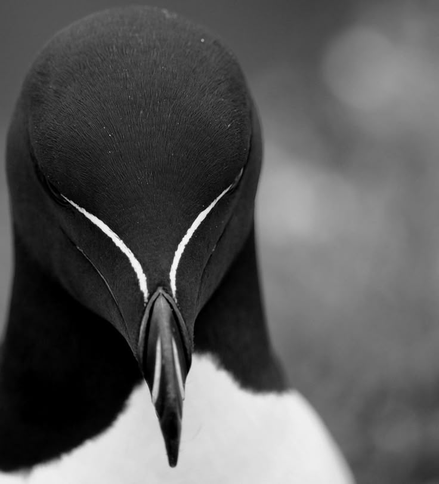

Pinguino Razorbill
El Alca Común o Razorbill (Alca torda) es un ave marina del hemisferio norte, a menudo confundida con un pingüino. Se caracteriza por su plumaje blanco y negro, pico robusto con una línea blanca y gran habilidad para el buceo. A diferencia de los pingüinos, esta especie sí puede volar. Mide entre 38-43 cm, con una envergadura de 60-69 cm. Vive en costas rocosas y se alimenta principalmente de peces. Puede permanecer bajo el agua aproximadamente un minuto, atrapando a sus presas mientras nada.

¿Qué es?
El razorbill o alca común es un ave marina del hemisferio norte. Aunque parece un pingüino, sí puede volar.
Características
Mide entre 38-41 cm, tiene un pico grueso y oscuro. Es monógama y se alimenta de peces pequeños.
Hábitat
Habita en regiones frías del Atlántico Norte, especialmente en Islandia.